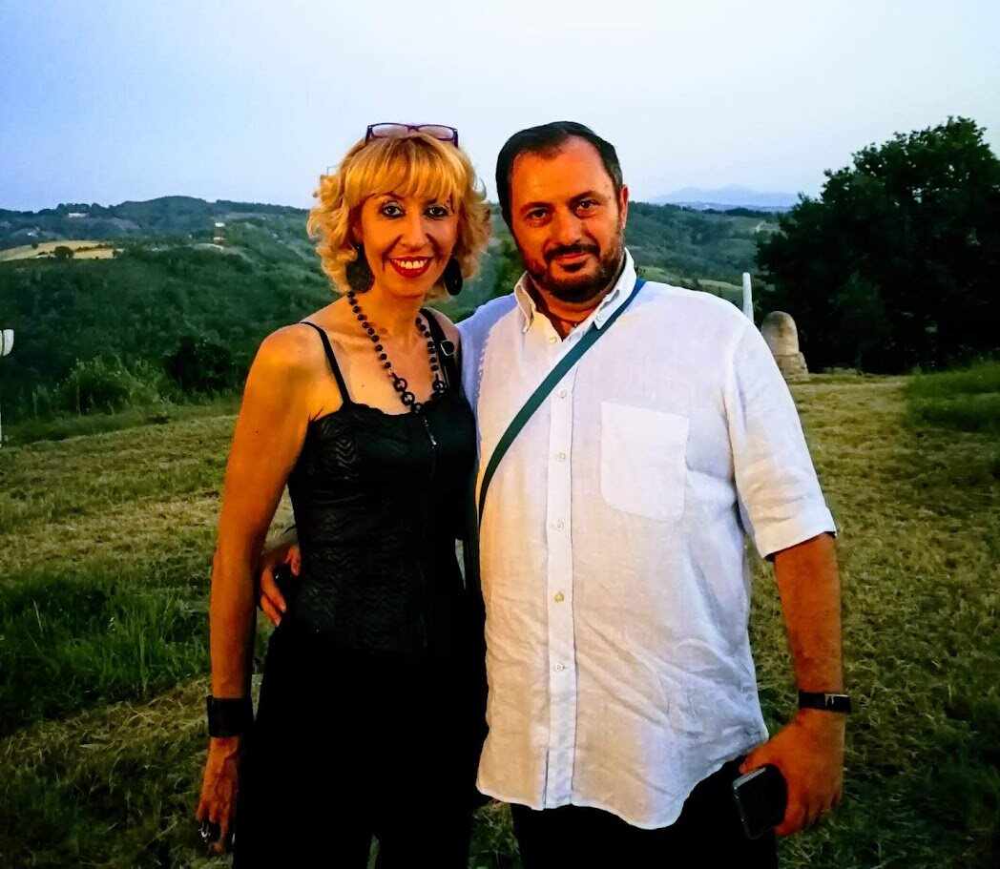
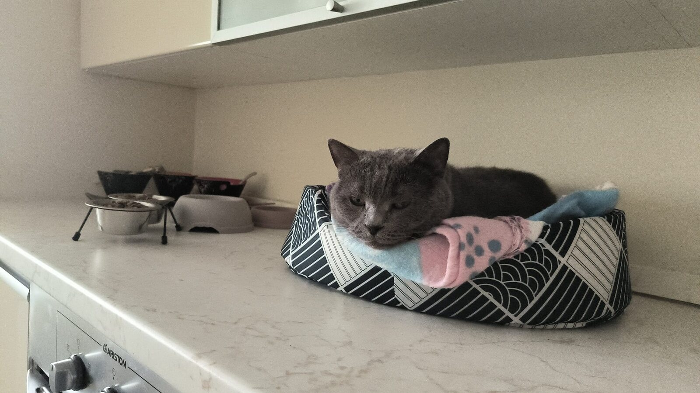
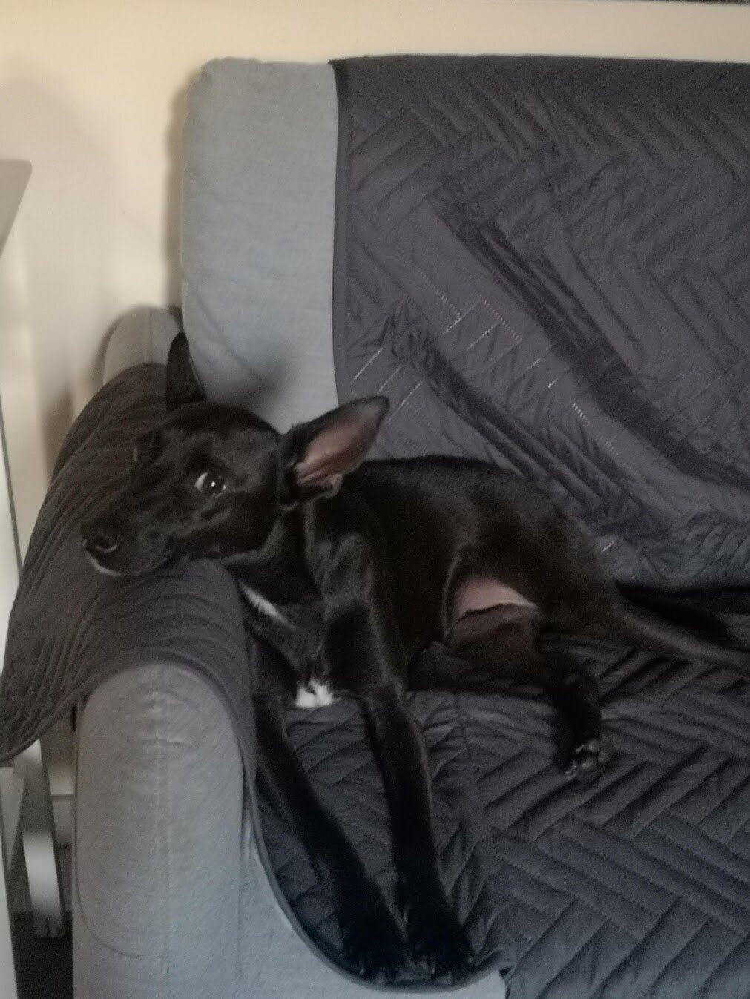
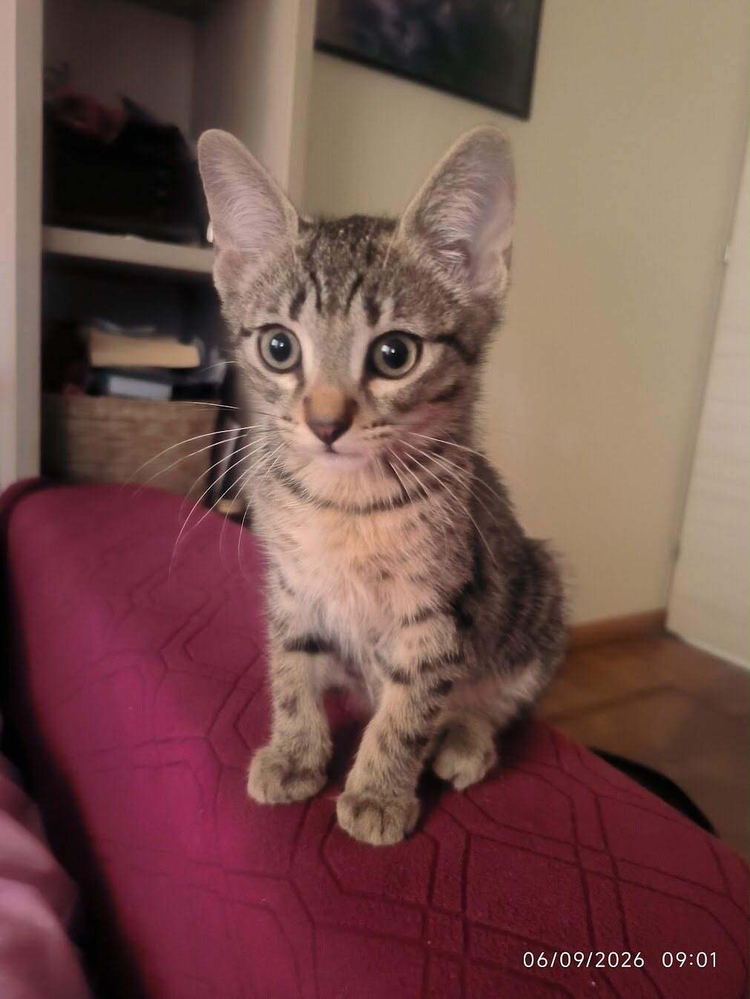

01
Databases and infrastructure
Oracle, PostgreSQL, MySQL/MariaDB, MongoDB, middleware and enterprise systems.
Information Technology · Project Management · Training
I am Luca Paolo Giuseppe Prinzio, a Database Administrator, Solution Architect and Project Manager. For over twenty years I have worked in Information Technology, in complex environments where reliability, service continuity, security and effective governance are not optional extras, but integral parts of solution design.
Over the years I have held technical, architectural and coordination roles, working with infrastructure, databases, distributed systems and services for complex organisations and the Public Administration. Today I work in infrastructure and engineering, with a particular focus on data architectures, high availability, operational continuity, disaster recovery, automation and the evolution of cloud services.
Alongside the technical dimension, I have developed extensive experience in Project Management, governance and work organisation. To me, designing a solution means considering technology, processes, people, responsibilities and operational sustainability together.
An important part of my activity is also devoted to training and knowledge sharing: teaching, writing and engaging with other professionals are how I turn experience gained in the field into shared knowledge.

Profile
My professional journey has progressively evolved from systems and database administration towards the design of broader architectures, project management and the coordination of complex activities.
I work with technologies and infrastructure that demand high levels of availability, security and reliability, addressing areas such as database architecture, high availability, backup and recovery, disaster recovery, cloud, automation, monitoring and service resilience. Technical expertise remains central to my work, but over time I have learned that the quality of a solution does not depend solely on the soundness of its architecture.
A technically valid system must also be governable, maintainable and understandable to the people who will use and manage it over time. This is why I pay particular attention to process definition, documentation, standardisation, the management of responsibilities and the development of operating models that make solutions genuinely sustainable.
Much of my work takes place at this boundary: between the formal system of architectures, procedures, plans, standards and tools, and the real system, where decisions are made by people who must collaborate, take responsibility, manage constraints and find compromises.
The same perspective informs my work as a Project Manager and trainer. I believe methods and tools are essential, but that they acquire real value only when they help people understand problems more clearly, make better-informed decisions and work together more effectively.
01
Oracle, PostgreSQL, MySQL/MariaDB, MongoDB, middleware and enterprise systems.
02
High availability, replication, disaster recovery, cloud and operational automation.
03
Governance, stakeholders, risk, planning, predictive methods and Agile approaches.
04
Teaching, instructional design and publications on project-based work.
Experience
From the digital transformation of the Italian justice system to industrial infrastructure and cloud services for Public Administration.
December 2022 — present
Database Administrator · Engineering, automation and development
Design and engineering of DBaaS services for Public Administration: enterprise data platforms, high availability, replication, disaster recovery, standardisation and automation on the Nivola private cloud, with a focus on cybersecurity, ACN requirements and GDPR compliance.
January 2017 — November 2022
Senior Consultant · IT Specialist / Oracle DBA, through Top Network
Database and middleware administration across Windows, Linux and IBM AIX; supporting highly critical enterprise systems and platforms including WebSphere, JBoss, Teamcenter, Team Concert and Microsoft Project.
2002 — 2016
Senior System Specialist · Project Manager · Technical Lead
National digitalisation and deployment projects for the RE.GE., SIGMA and SICP systems. Coordination of teams of up to fifteen people, functional analysis, infrastructure sizing, data migration, training and collaboration with DGSIA.
Teaching and consulting
Since 2009, I have designed and delivered training programmes in Project Management, organisation, leadership, goal-oriented work and team management, collaborating over time with training providers, companies and public and private organisations.
To me, training is something more than the simple transfer of knowledge. I try to start from practical experience, from the problems that organisations actually face and from the decisions that a Project Manager, a manager or a team member must make every day.
This is why my courses combine Project Management models and tools with real cases, examples, discussions and operational situations. The aim is not merely to explain how a project should work, but to help people understand why it often works differently in practice and which tools can be used to manage its complexity more effectively.
Teaching has progressively been joined by professional writing and knowledge sharing. I publish articles and contributions on Project Management, governance, decision-making processes and organisation, seeking to connect methodological approaches with experience gained in the field.
Teaching and writing have therefore become a natural continuation of my professional work: opportunities to revisit experience, test ideas and turn what I have learned through projects into knowledge that may also be useful to others.
2009
start of my continuing teaching and consulting activity
3 partners
documented training collaborations in the 2020–2026 record
PM · Agile
method, people, organisation and transformation
Completed activities
Completed activities
Completed activities
Completed activities
Completed activities
Completed activities
Completed activities
Each month is based on the date recorded in the source documentation. Planned assignments that have not yet been completed are not published.
Credentials and profiles
External professional references and selected milestones from an ongoing technical and managerial development path.
Publications
Articles and video content on governance, behaviour, cybersecurity and organisational capability in complex projects.
How to redesign governance so that it produces timely decisions instead of merely controlling documents, roles and approvals.
The gap between formal approval, actual priorities and operational readiness.
Why projects still fail when methodologies and tools are correctly applied.
The disproportionate impact of a single toxic behaviour on the whole team.
Security as a driver of public value, resilience and sustainable innovation.
An eight-hour course covering the principles, processes and essential tools of Project Management.
Beyond work
Work occupies an important part of my life, but fortunately it does not define all of it.
I was born in Pinerolo, but I have always lived in Turin. I was married and am now divorced; my son Davide, who is now 21, was born from that marriage. For almost nine years I have shared my life with Claudia and her son Edoardo.
Ours is a blended family, completed by three four-legged presences that have become an integral part of everyday life: Trilly, the veteran of the house, Black and the latest arrival, Roger, who quickly found his place and made our domestic balance even livelier.
Family, in its many forms, is one of my main points of reference. Over time I have learned that life rarely follows a perfectly straight path: people change, families evolve and come together in new ways, children grow up, and we too are continually called upon to reconsider priorities, perspectives and ways of seeing things.
One of the things I love most is travelling. Not so much to collect destinations, but to get to know places, return to them and build a relationship with them over time.
France holds a special place in this respect. The Côte d'Azur, and especially Antibes and Juan-les-Pins, has over the years become one of the destinations to which we feel most connected. Then there is Savoie, with its mountains, landscapes and that meeting of French culture and Alpine surroundings that I feel particularly close to.
And of course there are the Piedmont mountains, Sestriere, Bardonecchia and the many Alpine locations within easy reach of Turin: places suited both to a holiday and to a simple escape for a few days.
I like to travel without necessarily filling every day with things to do. A beautiful town, a landscape, a market, a restaurant discovered almost by chance, or simply time spent together can mean as much to me as a long list of attractions visited.
I cannot, on the other hand, describe myself as sporty. I am in fact rather lazy and sedentary, and physical activity is certainly not one of my strengths. I am probably much better at planning an itinerary than running it.
One interest that has developed into a genuine passion in recent years is genealogy.
I began reconstructing my family history, particularly that of the Prinzio family, tracing its roots through the Chisone Valley, Pinerolo and Villar Perosa and trying to piece together the lives, relationships and movements of the generations that came before me.
It is an activity that combines research, history, family memory and investigation: old documents, photographs, handed-down stories, relatives who emigrated to other continents, and small details that, brought together, gradually rebuild a story. I am especially fascinated by the idea that behind each of us lies a vast network of people, places and events about which we often know very little.
Another passion of mine is writing. Much of what I write comes from my professional world: Project Management, organisation, governance, technology and project delivery. Yet writing, for me, is not simply about explaining something I know. Above all, it is a way to put ideas in order, test whether an argument really holds together and engage with different points of view.
Some of these reflections have become articles and publications; others belong to a broader project that I return to from time to time: the idea of turning years of experience, training and reflection on Project Management into a book.
At the root of many of my interests there is probably always the same thing: curiosity. I like to understand how things work, but also why they work in a particular way. I can easily start from an apparently simple question and find myself, a few hours later, with ten tabs open, documents, notes and far more information than was strictly necessary.
This applies to technology and work, but also to a journey, my family history, a topic encountered by chance or something I simply do not know yet.
Perhaps this is the thread linking my professional and personal life:
learning, understanding, organising and telling stories.
With one important difference.
Outside work, I am still learning that not everything has to become a project.




Contact
Based in Turin and available for remote work. My external profiles provide updates, experience and verifiable professional references.